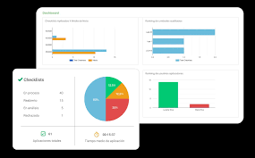

Los 4 Pilares de la Transformación Digital
Para que un proyecto tecnológico sea exitoso y pase los estándares de control, debe centrarse en los siguientes ejes estratégicos:
- La tecnología como motor: Rompe y redefine los procesos existentes.
- Impacto en personas y organizaciones: Los procesos afectan al personal; no se puede transformar uno sin el otro.
- Estrategia clara desde el inicio: Alineación total con los líderes y las partes interesadas.
- Resultados medibles: Traducir las métricas en indicadores clave de rendimiento (KPI) del negocio.
Evidencia Visual del Rendimiento



Navegación y Documentación
Regresar a la Introducción